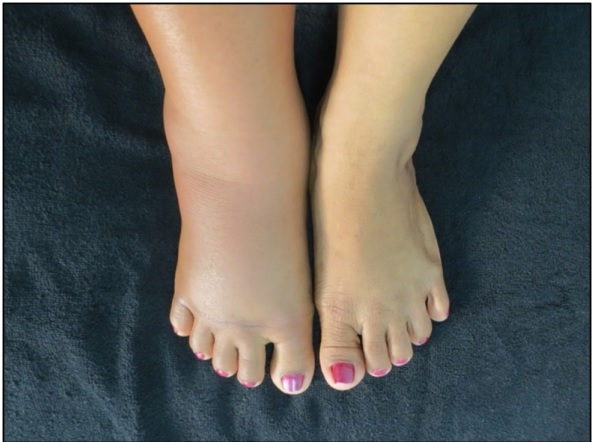
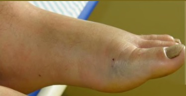

Princípio
Estabilizar, monitorar, sorotepizar
O soro neutraliza o veneno circulante, mas não desfaz o dano já causado. Por isso a conduta inicial combina cuidados de suporte (hidratação, analgesia) com monitoramento laboratorial e a soroterapia específica no momento certo.
Passos da admissão
Limpeza do local com água e sabão ou soro fisiológico 0,9%.
Hidratação venosa adequada — manter diurese entre 30–40 mL/h no adulto e 1–2 mL/kg/h na criança (proteção renal).
Analgesia — controlar a dor. Nunca usar AAS (efeito antiagregante piora sangramento).
Manter o membro acometido elevado.
Solicitar exames: hemograma completo, ureia, creatinina, CPK, urina I, fibrinogênio e coagulograma/TC — na admissão, 12h e 24h após o soro.
Avaliar sinais de infecção no local; se presentes, prescrever antibiótico.
Internação por no mínimo 24h.
Profilaxia antitetânica — após correção do coagulograma, quando necessária (detalhes na próxima aula).
Manifestações locais — o que você vai ver

Edema local progressivo — acidente botrópico. O edema pode se estender a todo o membro nas primeiras horas.
Fonte: substituir pelo crédito

Equimose perilesional — comum no botrópico e laquético. Observe o extravasamento sanguíneo ao redor da picada.
Fonte: substituir pelo crédito
Erro clássico
⚠️ AAS é proibido
O ácido acetilsalicílico é antiagregante plaquetário — em um paciente que já pode estar com distúrbio de coagulação (botrópico/crotálico/laquético), ele agrava o risco hemorrágico. Use outros analgésicos.
Por que 3 tempos de exame
Coletar na admissão, 12h e 24h permite acompanhar a resposta ao soro. O tempo de coagulação (TC) é o marcador prático de eficácia: se permanecer alterado após 24h, indica-se dose adicional de antiveneno.
Sobre "porta aberta"
Vítimas de acidente com peçonhentos são atendimento de porta aberta — não precisam de regulação prévia e o fornecimento do soro é gratuito (soro pertence ao Estado). O tempo até o soro é o que mais impacta o prognóstico.
Fontes: FioCruz — Manual de Diagnóstico e Tratamento de Acidentes por Animais Peçonhentos; Guia de Vigilância em Saúde / Ministério da Saúde; Nota Técnica MS nº 64/2021; Instituto Butantan. Conteúdo educativo — não substitui protocolo institucional vigente.